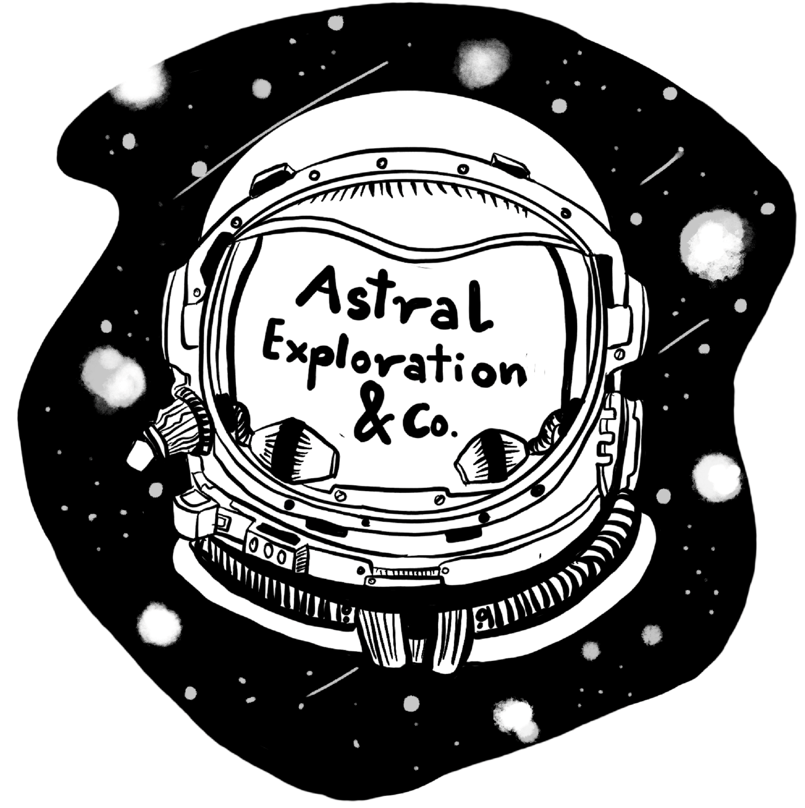

Astral Felony

Astral Exploration and Co.
Schedule
- October 3rd
- Talk 1: 8:30 to 10 AM
- Talk 2: 3 to 4:30 PM
- October 4th
- Workshops: 10 AM to 1 PM
Rules and Regulations
Registration is free. Seats are limited.
- The first 150 registrants will be invited to attend the lectures.
- The first 90 registrants will be invited to attend the workshop only upon attending ALL THE LECTURES
- The participants will be assigned a workshop based on their preferences and first come first serve basis. Please register only after going through this document and only if you’re sure to attend it!
Talks and Workshop details
Talk 1: AAA - All About Astro
By Dr. Somak Raychaudhury, Director of IUCAA
Abstract: This is an introduction to basic Astronomy where you'll be introduced to color and magnitudes, coordinate systems, stars and their properties along with a mention of dark matter
Talk 2: Milky Way - Insights from stellar archeology
By Dr. Thirupathi Sivarani, Professor at IIA
Abstract: Learn about first stars and the protogalaxy, Milky Way and its sub systems, stellar population, clusters and assembly using chemical abundances of stars of Milky Way to tag the major milestones of the Galaxy formation
Workshop 1: Hertzsprung Russell and more
Led by Vikrant Jadhav and Sahel Dey
Description: Introduction to Gaia DR2 data along with basic stellar terminology and definitions. Plot an H-R Diagram of a cluster and fit the color-magnitude diagram with an isochrone to obtain the age and distance of the cluster.
Tech requirements:
- TopCat (Downloading and Plotting data)
- JAVA Installation for LINUX/Windows
- Most importantly : A good internet connection
Workshop 2: Milky Way Rotation Curve
Led by Prof. Nirupam Roy, Prerana Biswas and Gautam Saikia
Description: We will learn about the rotation of the Milky Way by using the radio waves from the neutral hydrogen of the Milky Way galaxy to derive the rotation curve and then estimate the total mass of the Galaxy from this rotation curve. Figure out some ‘dark’ mysteries hidden by our very own Akash Ganga.
Tech requirements:
- Any text editor, Example: vi
- Any plotting utility, Example: gnuplot, pyplot
- Most importantly : A good internet connection
Workshop 3: Detection of Exoplanets
Led by Aritra Chakrabarti, Sudeb Ranjan Datta and Ankit Kumar
Description: Introduction to transit photometric technique of detection of exoplanets. Learn about the different properties of the discovered planets along with prediction of their next transit events. Show different ways of accessing Kepler/K2 light curves and process and model them to get the properties of the planets using open-source codes based on Python.
Tech requirements: Python 3 along with pre-installed packages like Numpy, Scipy, Astropy, Matplotlib, Pandas. Install Anaconda3 (preferably) to avoid separate installation of these packages.
- transit.py by Ian Crossfield
- Pytransit (pip install pytransit)
- Pyapphot (pip install git+https://github.com/arcunique/pyapphot)

Astral Felony
Astral Felony is an online instagram based quiz organized by Pravega, the annual undergraduate festival of IISc. The questions would hopefully be crazy and mind boggling or trivial depending on the mood of the organizers at the time of making these questions. You can find the rules and regulations below, which also depend on the mood of the organizers and their overlords at Pravega and are subject to change.
Click here to subscribe to our newsletter and receive regular updatesAwards
Insta shoutouts free entry into the Astronomy workshop being planned near the end of September along with a certificate
Eligibility
Anyone with an instagram account (Open to all)